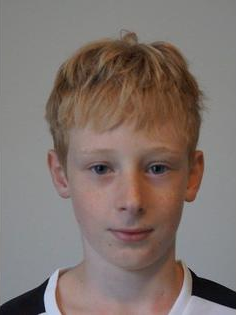

Team04
Team04 ist eine dynamische und innovative Gruppe von Entwicklern, Designern und Finanzexperten, die sich darauf spezialisiert haben, Menschen weltweit dabei zu unterstützen, ihre Handelsfähigkeiten zu verbessern und ein tieferes Verständnis für die Finanzmärkte zu erlangen. Wir sind leidenschaftlich daran interessiert, die Barrieren für den Zugang zu qualitativ hochwertiger Finanzbildung abzubauen und eine Gemeinschaft von gut informierten, selbstbewussten Händlern zu fördern.
Unsere Mission bei Team04 ist es, den Zugang zu qualitativ hochwertigem Handelswissen und Training zu demokratisieren. Wir glauben fest daran, dass jeder, unabhängig von seinem Hintergrund oder seinen bisherigen Erfahrungen, das Potenzial hat, ein erfolgreicher Händler zu werden. Der Trading Trainer ist mehr als nur ein Trainingsprogramm – er ist ein Werkzeug zur persönlichen und finanziellen Weiterentwicklung.
Durch die Kombination modernster Technologie, praxisnaher Inhalte und einer unterstützenden Community streben wir danach, eine neue Generation von Händlern zu befähigen. Wir bei Team04 sind stolz darauf, einen positiven Beitrag zur Finanzbildungslandschaft zu leisten und freuen uns darauf, auch in Zukunft wegweisende Lösungen zu entwickeln.
Team04 steht für Innovation, Zusammenarbeit und Exzellenz. Unser Engagement für Qualität und Benutzerzufriedenheit treibt uns an, ständig nach Verbesserungen und neuen Möglichkeiten zu suchen, um den Bedürfnissen unserer Benutzer gerecht zu werden. Gemeinsam arbeiten wir daran, die Art und Weise, wie Menschen den Handel erlernen und praktizieren, zu revolutionieren.
Unser Team:
Manuel Groß
Unser Projektleiter, Manuel Groß, ist das Herzstück von Team04. Mit einem bemerkenswerten Arbeitsethos und einer unerschütterlichen Hingabe an das Projekt treibt er das Team zu Höchstleistungen an. Seine Leidenschaft für das Projekt und sein Engagement sind unverkennbar und inspirieren das gesamte Team, stets das Beste zu geben.
Manuel ist bekannt für seinen Fleiß und seine Bereitschaft, unermüdlich an den Aufgaben zu arbeiten, um sicherzustellen, dass die Ziele des Projekts erreicht werden. Seine Arbeitsmoral ist vorbildlich, und er ist stets bereit, die Extrameile zu gehen, um Herausforderungen zu meistern und Lösungen zu finden.
Trotz seiner bemerkenswerten Fähigkeiten und seines Engagements hat Manuel auch seine Herausforderungen. Er kämpft gelegentlich mit leichten Aggressivitätsproblemen, die jedoch seinen Führungsstil nicht beeinträchtigen. Vielmehr hat er gelernt, diese Herausforderungen zu erkennen und aktiv daran zu arbeiten, sich selbst zu verbessern und konstruktiv mit Stress umzugehen.
Unter Manuels Leitung hat das Team bedeutende Fortschritte erzielt. Seine Fähigkeit, komplexe Projekte zu managen und das Team zu motivieren, hat maßgeblich zum Erfolg von Team04 beigetragen. Manuel ist nicht nur ein herausragender Projektleiter, sondern auch ein Mentor, der das Wachstum und die Entwicklung seiner Teammitglieder fördert.
Manuel Groß steht für Entschlossenheit, Engagement und kontinuierliches persönliches Wachstum. Seine Führungsqualitäten und seine Fähigkeit, das Beste aus seinem Team herauszuholen, machen ihn zu einem unverzichtbaren Bestandteil von Team04.
~ wird später oft von der Polizei kontrolliert werdenJulian Schwendtbauer

Unser Reinigungsfachmann, Julian Schwendtbauer, ist eine wesentliche Stütze für das reibungslose Funktionieren von Team04. Mit seiner gewissenhaften Arbeit und seinem Engagement sorgt er dafür, dass unsere Arbeitsumgebung stets sauber und einladend ist. Julians Hingabe zu seiner Aufgabe trägt maßgeblich zu einem angenehmen und produktiven Arbeitsumfeld bei.
Julian ist bekannt für seine akribische Arbeitsweise und seine unermüdliche Bereitschaft, das Beste aus jeder Aufgabe herauszuholen. Seine Liebe zum Detail und sein unermüdlicher Einsatz gewährleisten, dass unsere Büroräume stets in einem erstklassigen Zustand sind, was das Wohlbefinden und die Produktivität des gesamten Teams fördert.
Trotz seiner hervorragenden Arbeitsmoral hat Julian auch seine eigenen Herausforderungen. Er neigt zu einer leichten Computersucht, was manchmal seine Aufmerksamkeit von seinen Aufgaben ablenken kann. Zudem hat Julian während seines Auslandssemesters bei einem wilden Volk einige sprachliche Eigenheiten entwickelt, wodurch er teilweise die deutsche Sprache verlernt hat. Diese besonderen Erfahrungen haben ihn jedoch auch einzigartig und anpassungsfähig gemacht.
Julian ist trotz seiner Herausforderungen ein unverzichtbarer Teil von Team04. Seine Fähigkeit, sich an verschiedene Situationen anzupassen und seine positive Einstellung machen ihn zu einem geschätzten Kollegen. Er bringt eine einzigartige Perspektive und Lebendigkeit in unser Team, was unsere Zusammenarbeit bereichert und unsere Kreativität fördert.
Julian Schwendtbauer steht für Hingabe, Anpassungsfähigkeit und die Bereitschaft, trotz persönlicher Herausforderungen stets sein Bestes zu geben. Seine Präsenz und sein Engagement sind ein wichtiger Beitrag zum Erfolg und Wohlbefinden von Team04.
~ hat selten den richtigen Riecher, immer der Nase nach, massiver, windschiefer RiechkolbenMichael Oswald
Unser Designer, Michael Oswald, auch bekannt als der "Medienkasperl", ist ein kreatives Genie und eine unverzichtbare Kraft bei Team04. Mit seinem akribischen Auge für Details und seiner stets offenen und ehrlichen Kommunikation stellt er sicher, dass unsere Projekte visuell ansprechend und benutzerfreundlich sind.
Michael ist bekannt für seine akribische Arbeitsweise. Kein Detail ist ihm zu klein, und er strebt stets nach Perfektion in seinen Designs. Seine Offenheit und Ehrlichkeit sorgen dafür, dass das Team stets klare und direkte Rückmeldungen erhält, was die Qualität unserer Arbeit kontinuierlich verbessert.
Trotz seiner professionellen Stärken hat Michael auch seine Herausforderungen. Er hat eine leichte Nikotinsucht, die sich durch andauerndes Snusen zeigt. Diese Angewohnheit wirkt sich manchmal auf seine Gesundheit aus, aber er arbeitet daran, diese Herausforderung zu bewältigen. Ein weiterer, schwerwiegenderer Aspekt ist, dass es Berichte über Sklaven im Keller gibt, was absolut inakzeptabel ist und nicht mit den Werten von Team04 vereinbar ist.
Abgesehen von diesen Herausforderungen hat Michael einen enorm positiven Einfluss auf unser Team. Seine Kreativität und sein Sinn für Ästhetik haben die visuelle Identität von Team04 maßgeblich geprägt. Er inspiriert das Team, neue und innovative Designansätze zu erkunden und unsere Projekte auf die nächste Stufe zu heben.
Michael Oswald steht für kreative Exzellenz, Transparenz und akribische Arbeit. Trotz seiner persönlichen Herausforderungen trägt er wesentlich zum Erfolg von Team04 bei und sorgt dafür, dass unsere visuellen und ästhetischen Standards stets auf höchstem Niveau sind.
~ (fällt rückwärts die Stiege hinunter) PASS AUF!!